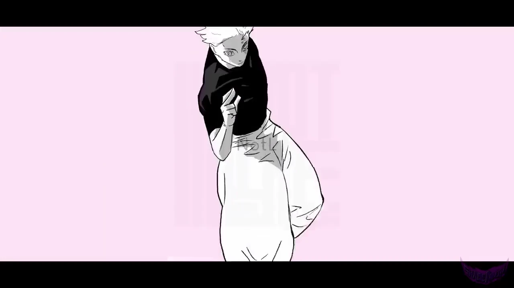
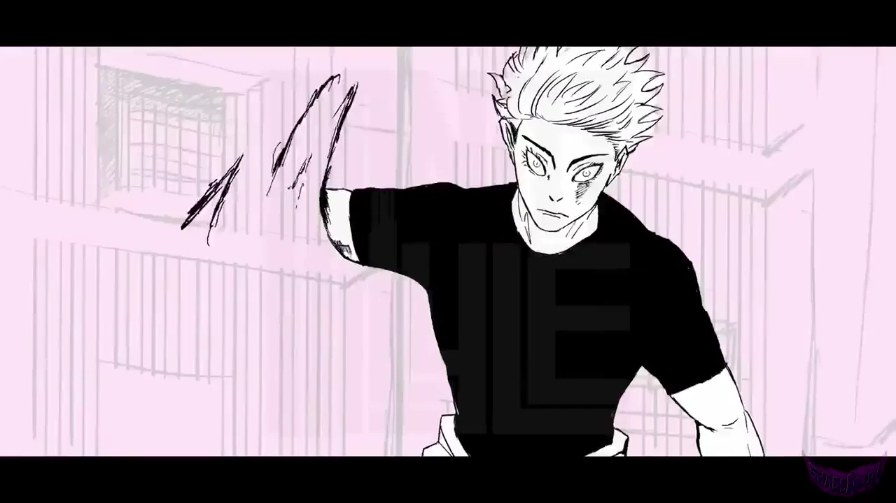

Anime en la calle.Gojo vs. Sukuna
Dos fuerzas. Una elección.
ELEGÍ
TU LADO.
El infinito.
La maldición.
Vos decidís.

SIN LÍMITES.
Entrá en el mundo de Gojo.
Bajá para avanzar. Subí para volver.
Ver colecciónSección 1: Gojo.
LLEVÁ
TU LADO.
Animación: @NotL. Material aportado para esta propuesta privada.